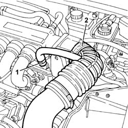
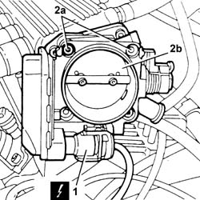
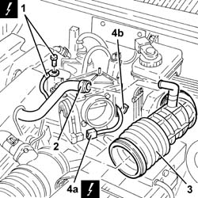
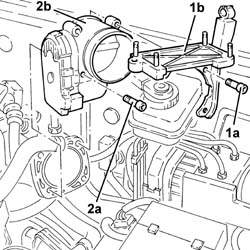
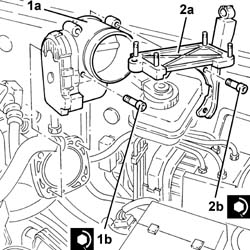

1056B17 throttle body intergral with dvl - r r
- Path
- Procedures > 10 ENGINE > 1056 PETROL INJECTION SYSTEM > 1056B multi-point injection system (mpi) > 1056B17 throttle body intergral with dvl - r r
- Kind
- repair procedure (removal / refitting; the operation number is the code)
- Applies to
- all engines; all production periods
- Interactive page
- https://sloeber94.github.io/elrnDB-a156/en/#/3237535
Applies to: engines: 2.5 V6, 3.2 V6; all production periods
 Removing
Removing
 Refitting
RefittingEnsure that the ignition key is in stop position, then disconnect the battery negative terminal.
 | Name | Connector |
|---|---|---|
- | Battery |
1. Disconnect the oil vapour recirculation pipe from the right cylinder head.
2. Disconnect the corrugated hose from the throttle body and move aside.

Applies to: engines: 2.5 V6, 3.2 V6; all production periods
1. Disconnect the electrical connection from the throttle casing integrated with the D.V.L.
| Name | Connector |
|---|---|---|
1 | Throttle body actuator |
2. Undo the bolts (2a) and remove the throttle body integrated with the D.V.L. (2b).
Remove the gasket.

Applies to: engines: 2.5 V6, 3.2 V6; all production periods
Refitting
RemovingFit the throttle body integrated with the D.V.L. complete with gasket and fix it with the relevant bolts to the specified torque.
 | Fastening | Component | Ø | Value (daNm) |
|---|---|---|---|---|
- | Bolt | BUTTERFLY VALVE CASE/S (MPI) | M6 | Air chamber side 0.8 - 1.1 |
Connect the electrical connection to the throttle body integrated with the D.V.L.
Place the complete corrugated hose back in its housing and connect it to the throttle body with integrated D.V.L.
Connect the vapour recirculation pipe to the right cylinder head.
Connect the battery terminal (-).
Applies to: all engines; all production periods; only with equipment: Smart gearbox
Removing
RefittingEnsure that the ignition key is in the OFF position, then disconnect the negative (-) battery terminal.
| Name | Connector |
|---|---|---|
- | Battery |
1056B82 injection/ignition system e.c.u. (one) - r + r
1. Disconnect the earth lead from the injection control unit support.
| Name | Connector |
|---|---|---|
1 | Earth on engine |
2. Disconnect the oil vapour recovery pipe from the corrugated hose.
3. Loosen the bands and remove the second section of the corrugated hose after having released it from the bracket.
4. Disconnect the electrical connection (4a) from the butterfly casing integrated with D.V.L. and release the wiring from the band (4b).
| Name | Connector |
|---|---|---|
4a | Throttle body actuator |

Applies to: all engines; all production periods; only with equipment: Smart gearbox
1. Undo the bolts (1a) and remove the support (1b) for the injection/ignition system control unit.
2. Undo the remaining bolt (2a) and remove the butterfly casing integrated with D.V.L. (2b) complete with gasket.

Applies to: all engines; all production periods; only with equipment: Smart gearbox
Refitting
Removing1. Fit the butterfly casing integrated with D.V.L. (1a) complete with gasket and fix it tightening the bolt (1b) to the recommended torque.
| Fastening | Component | Ø | Value (daNm) |
|---|---|---|---|---|
1b | Bolt | BUTTERFLY VALVE CASE/S (MPI) | M6 | Air chamber side 0.8 - 1.1 |
2. Fit the support (2a) for the injection/ignition system control unit and fix it tightening the bolts (2b) to the recommended torque.
| Fastening | Component | Ø | Value (daNm) |
|---|---|---|---|---|
2b | Bolt | BUTTERFLY VALVE CASE/S (MPI) | M6 | Air chamber side 0.8 - 1.1 |

Applies to: all engines; all production periods; only with equipment: Smart gearbox
Connect the electrical connection to the butterfly casing integrated with D.V.L. and fix the wiring to the band.
Place the second section of the corrugated hose back in its housing and fix it using the bands.
Connect the oil vapour recovery pipe to the corrugated hose.
Connect the earth lead to the injection control unit support.
1056B82 injection/ignition system e.c.u. (one) - r + r
Connect the negative (-) battery terminal.